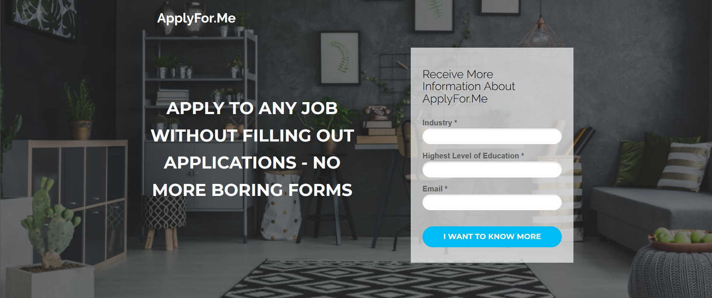
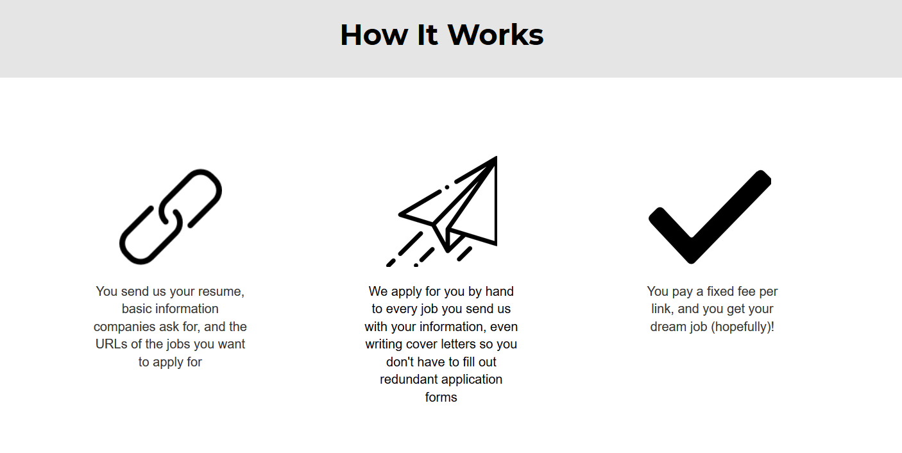

    <div id="portfolio-page" class="portfolio-page-content">
    <div class="container">
        <div class="portfolio-nav">
            <div id="portfolio-close-button" class="portfolio-close-button">
                <a href="#portfolio"><i class="fa fa-close"></i></a>
            </div>
        </div>

        <div class="portfolio-title">
            <h1>Apply For Me</h1>
        </div>

        <div class="row">
            <div class="col-sm-7 col-md-7 portfolio-block">
                <div class="owl-carousel portfolio-page-carousel">
                    <div class="item">
                        
                    </div>
                    <div class="item">
                        
                    </div>
                </div>

                <script type="text/javascript">
                    jQuery(document).ready(function($){
                        $('.portfolio-page-carousel').owlCarousel({
                            smartSpeed:1200,
                            items: 1,
                            loop: true,
                            dots: true,
                            nav: true,
                            navText: false,
                            margin: 10
                        });
                    }); 
                </script>
            </div>

            <div class="col-sm-5 col-md-5 portfolio-block">
                <!-- Project Description -->
                <div class="block-title">
                    <h3>Description</h3>
                </div>
                <ul class="project-general-info">
                    <li><p><i class="fa fa-globe"></i> <a href="http://www.applyfor.me" target="_blank">ApplyFor.Me (dead now)</a></p></li>
                    <li><p><i class="fa fa-calendar"></i>Late 2017</p></li>
                </ul>

                <p class="text-justify">ApplyFor.Me was meant to be a service where people would pay a fixed fee for
                a business to apply for many internship and/or job opportunities in their name. The value hypothesis
                was that people would pay to expedite the process of applying for jobs. This is a shift from the traditional
                job site that shifts the cost to recruiters and companies, since the value add here also lies in the fact
                that I could apply to any job posting - not just the ones of companies that I convinced to post on some new job site.</p>
                <!-- /Project Description -->

                <!-- User & Market Research -->
                <div class="block-title">
                    <h3>User & Market Research</h3>
                </div>
                <p class="text-justify">I conducted 15 in-person interviews with Cornell undergrads. The research indicated
                that there was an implicit problem; people were spending up to 15 hours per week applying to jobs and answering
                the same questions on all their forms. However, they also mentioned that they like to hand-pick the specific
                jobs they apply for, not just blindly apply to a bunch in one industry.</p>
                <!-- /User & Market Research-->

                <!-- Execution & Methodology -->
                <div class="block-title">
                    <h3>Execution & Methodology</h3>
                </div>
                <p class="text-justify">Since the user research was positive, I decided to launch a concierge MVP: instead
                of spending months building out a bot to automatically apply for jobs for people, I would manually fill
                    in their information for jobs they were interested in. As per the user research, I had them send links
                of jobs that interest them instead of blindly applying. I got early adopters through channels where there is a biggest
                need: job finding forums.</p>
                <!-- /Execution & Methodology-->

                <!-- Outcome -->
                <div class="block-title">
                    <h3>Outcome</h3>
                </div>
                <p class="text-justify">I had just a few users who ended up converting and using my service. After following
                up with them months later, I found that they did not hear back from many companies at all. They got only
                    one or two interviews, but no internship offers. While I can apply to companies for them, I cannot
                compensate if they do not have a strong resume.</p>
                <!-- /Outcome-->

                <!-- Lessons -->
                <div class="block-title">
                    <h3>Lessons</h3>
                </div>
                <p class="text-justify">The inherent nature of my product leads to a question as to whether I provide value
                    if I see that they are a freshman and don't have a strong resume at all, since they likely won't get offers.
                I could address this by offering a resume service or only providing service for people with a good resume.
                It's important to consider both the immediate and long term value you can provide to consumers. My site
                    gave users short-term satisfaction but didn't help them much in the long term of actually getting an
                    offer. If users aren't happy in the long term then the product isn't sustainable.
                The MVP method of manually applying for them was extremely time consuming, so I decided to put this on the
                back-burner for when I have more time.</p>
                <!-- /Lessons-->

            </div>
        </div>
    </div>
</div>
